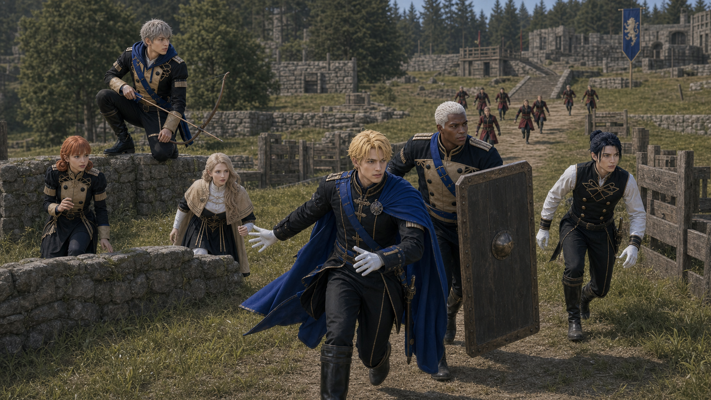
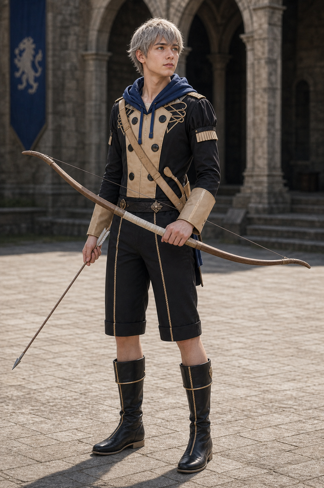
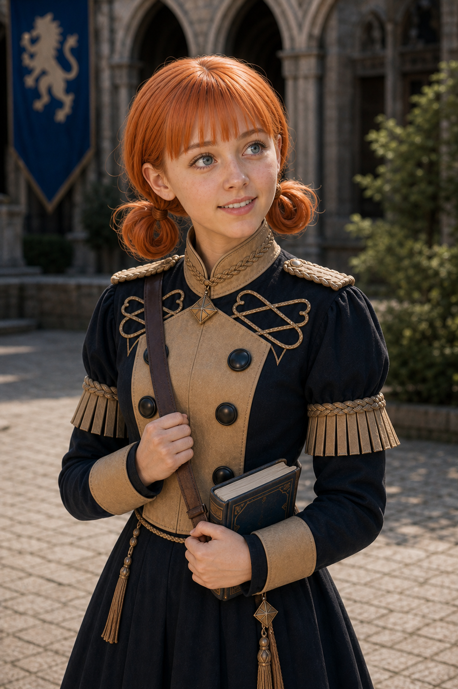
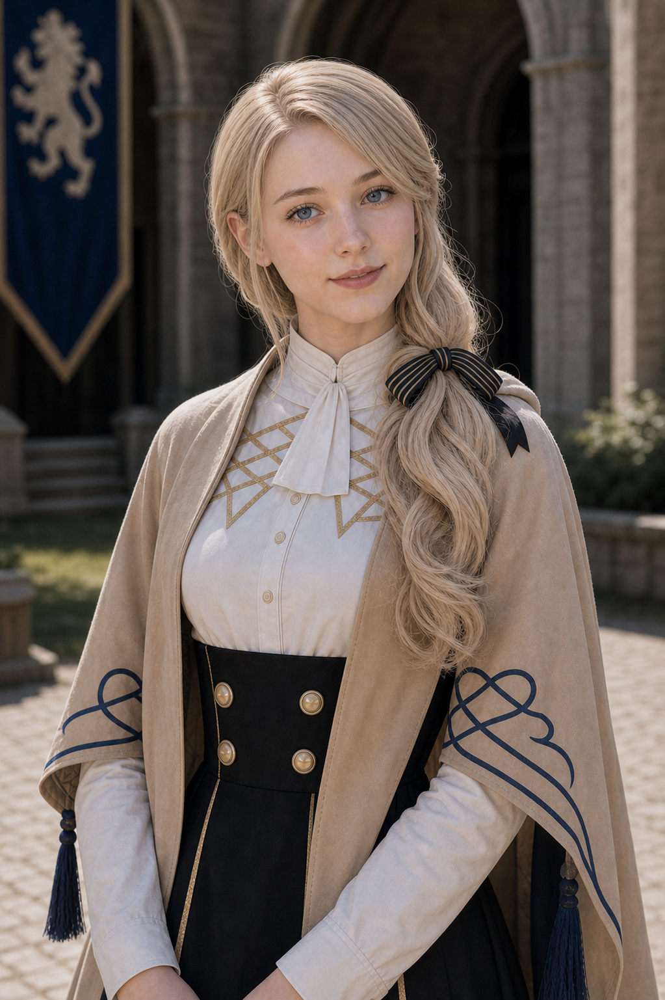

P0 Scene09 Reference Board
Index
镜头026C：第一轮推进
青狮主动出击
Generated Keyframe

Character Reference Assets

Dimitri
youthful blond Blue Lions prince, training lance, aggressive but controlled
assets/characters/blue_lions/Dimitri/academy/selected.png
Dedue
tall broad guardian, dark skin, white hair, shield-wall posture
assets/characters/blue_lions/Dedue/academy/selected.png
Felix
dark-blue-haired duelist, sharp side-cut tension, restrained from overextending
assets/characters/blue_lions/Felix/academy/selected.png
Ashe
ash-gray-haired archer, observation high point and suppression shots
assets/characters/blue_lions/Ashe/academy/selected.png

Annette
petite peach-orange-haired 18-year-old mage, nervous-to-stable wind magic
assets/characters/blue_lions/Annette/academy/selected.png

Mercedes
gentle blonde 18-year-old healer, soft but decisive rear-line support
assets/characters/blue_lions/Mercedes/academy/selected.png
Subframes
分镜点 A：号令与启动
Blue Lions explode from the southeast start as the horn hits; Dimitri and Dedue take the first two steps before anyone else reacts.
episodes/EP02/generated/mock_battle_production_keyframes_2026-07-17/Shot026C_A_keyframe.png
分镜点 B：前线加速
Dimitri and Dedue pull ahead toward the central outer choke while Felix shadows on the open side and Ashe breaks for a height advantage.
episodes/EP02/generated/mock_battle_production_keyframes_2026-07-17/Shot026C_B_keyframe.png
分镜点 C：支援线跟进
Annette and Mercedes move under cover, young and tense, keeping the rear connected to the charge.
episodes/EP02/generated/mock_battle_production_keyframes_2026-07-17/Shot026C_C_keyframe.png
分镜点 D：黑鹫在前方压上
The Black Eagles are visible trying to claim the same lane, making the collision feel intentional rather than accidental.
episodes/EP02/generated/mock_battle_production_keyframes_2026-07-17/Shot026C_D_keyframe.png
Production Prompt
Create a production-ready cinematic live-action storyboard keyframe for EP02 Scene09 mock battle, Shot026C Blue Lions Horn Charge.
Current script beat: 青狮主动出击.
Frame content: horn sounds; Blue Lions surge first from southeast toward central outer passage, not waiting for attack.
Characters and identity locks: Dimitri as blond academy prince, youthful, blue academy uniform, training lance, intense but restrained; Dedue very tall and broad-shouldered, dark skin, short white hair, shield-wall guardian posture; Felix dark-blue-haired youthful duelist, black vest and white sleeves, wooden training sword, sharp controlled aggression; Ashe pale ash-gray-haired earnest archer, blue hooded layer, wooden training bow; Annette petite peach-orange-haired nervous mage, controlled wind magic; Mercedes youthful blonde healer with gentle calm presence, white/cream trim, soft healing light.
The setting is the canon-inspired Garreg Mach outdoor mock battle field: one continuous tactical map with grass, low stone walls, wooden barriers, thickets, stone steps, and a northeast raised heal-tile platform. It must not look like a small training yard or isolated sparring ring.
Use wooden or blunted academy training weapons, controlled nonlethal contact, no blood, no serious injury. Make the frame readable as a movie storyboard still that can guide AI video generation: clear geography, character blocking, screen direction, and the peak tactical action.
Camera: Blue Lions sprint from southeast start toward the central outer choke after the horn. Dimitri and Dedue lead, Felix shadows on the side, Ashe climbs for observation, Annette and Mercedes follow under cover. Black Eagles are visible ahead preparing to take the same lane. Controlled academy mock battle, one continuous outdoor tactical field..
Style: photorealistic live-action, 16:9 cinematic frame, natural daylight, youthful academy students, identity-locked faces and costumes, no UI.
Character asset reference requirement:
- Dimitri: assets/characters/blue_lions/Dimitri/academy/selected.png; youthful blond Blue Lions prince, training lance, aggressive but controlled
- Dedue: assets/characters/blue_lions/Dedue/academy/selected.png; tall broad guardian, dark skin, white hair, shield-wall posture
- Felix: assets/characters/blue_lions/Felix/academy/selected.png; dark-blue-haired duelist, sharp side-cut tension, restrained from overextending
- Ashe: assets/characters/blue_lions/Ashe/academy/selected.png; ash-gray-haired archer, observation high point and suppression shots
- Annette: assets/characters/blue_lions/Annette/academy/selected.png; petite peach-orange-haired 18-year-old mage, nervous-to-stable wind magic
- Mercedes: assets/characters/blue_lions/Mercedes/academy/selected.png; gentle blonde 18-year-old healer, soft but decisive rear-line support
The generated face, hairstyle, age impression, costume silhouette, and color accents must remain continuous with these selected.png assets across all subframes.